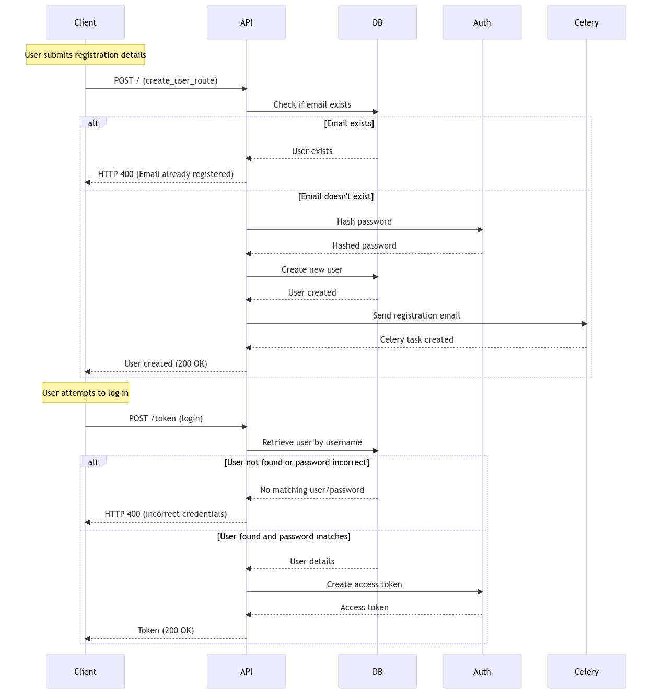
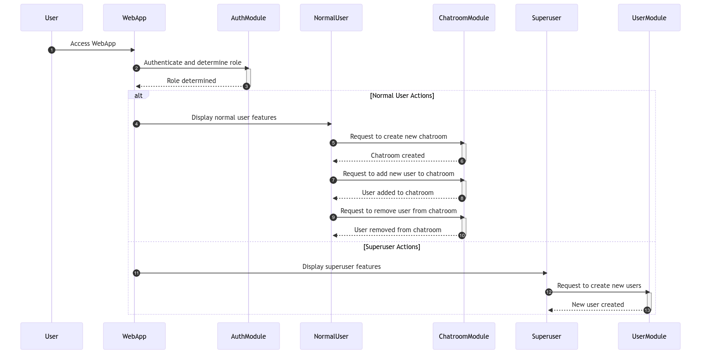

Lab 3: Advanced User Management and Chatroom Module¶
Lab 3 builds upon the work of Lab 2 by introducing advanced user roles and a brand-new chatroom module, enhancing the project’s features and security.
Table of Contents¶
User Roles¶
In Lab 3, we have two user roles: 1. Superuser: Has elevated privileges and can perform actions like adding new users. 2. Normal User: Standard users who can use regular features.
New Decorators for Route Protection:
- login_required: Ensures the user is logged in.
- superuser_required: Ensures the user is a superuser.
Chatroom Module¶
We introduce a chatroom module where users can: - Create new chatrooms. - Add users to chatrooms they own. - View chatrooms they are a part of.
Chatroom Features:¶
- CRUD Operations: Users can create, read, update, and delete chatrooms.
- Member Management: Superusers can add or remove members from chatrooms.
Project Structure¶
The project structure has been updated to reflect the new modules and changes:
Diagram Flow¶
User Module¶

Chatroom Module¶

Usage¶
- Creating a Chatroom:
POSTrequest to/create/with chatroom details. - Viewing Chatrooms:
GETrequest to/to view chatrooms for the logged-in user. - Adding a User to Chatroom:
POSTrequest to/chatrooms/{chatroom_id}/add_userwith the username to add.
Note: Make sure you have the correct user role for specific actions.
Future Improvements¶
- Implement chat functionality within chatrooms.
- Add more user roles and refine access controls.
- Enhance the chatroom interface and provide notifications for chatroom activity.